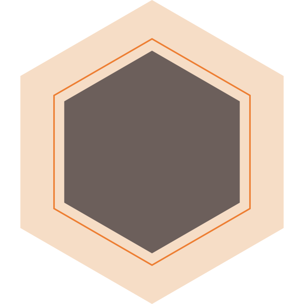

home
> 지속가능경영 > 윤리준법경영
윤리준법경영
시스템이 만드는 절차적 공정성을 추구합니다.
ETHICAL MANAGEMENT
윤리·준법경영은 스스로의 결정과 행동에 적용하는 도덕적인 원칙인 ‘윤리’와 사회가 정해 놓은 구조화된 규율을 정직하게 따르는 ‘준법’을 모두 준수하는 경영을 의미합니다. 한화는 윤리·준법경영의 온전한 내재화를 위해 그룹과 계열사 내에 컴플라이언스위원회 시스템을 운영하고 있으며, 이를 보다 객관화하고 체계화하기 위해 준법경영 시스템, 반부패경영 시스템 등 국제표준 인증 취득에 주력하고 있습니다.

- 윤리경영
- 국가.사회
- 법규
- 임직원
- 협력업체
- 투자자
- 고객
윤리경영 방침
적극적인 윤리적 기업문화의 창달에 대한 윤리경영을 원칙으로 합니다.
윤리경영 회사경영 및 기업활동에 있어서 기본 덕목입니다.
올바른 윤리관을 통해 건전한 기업가치를 창출하겠습니다.
윤리강령 행동강령을 제정하여 운영하며, 모범적으로 실천하고 준수하겠습니다.